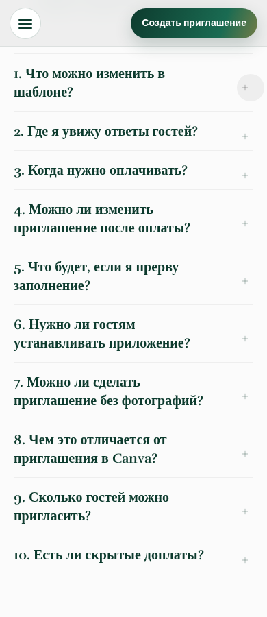
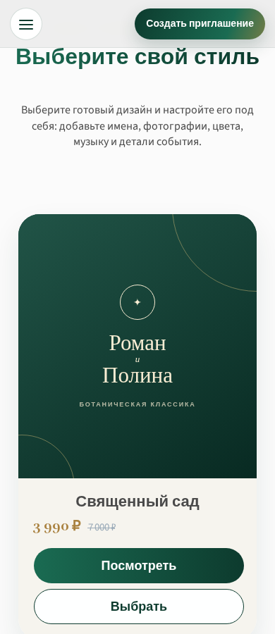

Главная страница · решения владельца
Что оставить, а что поправить
Проверили публичную главную от первого экрана до футера на восьми ширинах в Chromium. Ниже — подтверждённые проблемы и отдельно дизайнерские гипотезы. Это предложения, не внесённые исправления. Ориентир для просмотра — 8–12 минут.
01 · Достоверность · важно
Отзывы под именами людей
Сейчас: JavaScript главной заменяет тексты восьми цитат под именами и звёздами на рассказы о самостоятельном конструкторе. Подтверждения, что эти слова принадлежат указанным людям, у нас нет. Это факт кода, не доказательство, что оригинальные отзывы выдуманы.
★★★★★ · Имя автора
«[история о платформе, подставленная кодом]»
А. Подтвердить первоисточник и согласие каждого автора на точную цитату.
Б. До подтверждения убрать атрибуцию и звёзды, заменить блок честным объяснением функций либо скрыть.
02 · Подтверждённый функциональный дефект
Ответ FAQ не открывается
На публичной странице клик по первому вопросу «Что можно изменить в шаблоне?» оставляет aria-expanded=false; ответ скрыт. Воспроизведено на 320, 390, 768 и 1440 px. Браузер также сообщает о JS с MIME text/plain и запасном скрипте 404; связь с FAQ пока не доказана.

Ответ виден после клика; повторный клик закрывает. Клавиатура Enter/Space и остальные вопросы тоже проходят регрессию.
04 · Точечные гипотезы
Якорь каталога и анимация заголовка
Якорь — подтверждено: «Шаблоны» прокручивает секцию под фиксированную шапку (~68 px). Предлагается небольшой scroll-margin без смены композиции.
Заголовок — вкус/удобство: эффект печати иногда показывает незаконченные слова. Вариант — те же фразы целиком, с уважением reduced-motion. Не доказано, что посетителям он понравится больше.

Отступить заголовок каталога ниже фиксированной шапки; анимацию заголовка решать отдельно, после сравнения полного цикла.
Как передать решения
«Сохранить пункт» хранит черновик только в вашем браузере; я его не получу автоматически. Отметьте каждый пункт (можно «Не проверял») и нажмите «Передать отзыв»: откроется предзаполненный issue в приватном репозитории GitHub, где надо нажать Submit new issue. Нужен ваш вход в GitHub. Отзыв не является согласием на выпуск production.
Полные внутренние QA-снимки и технический отчёт хранятся отдельно; эта страница — публичный, но неиндексируемый просмотр без данных клиентов. Физический iPhone/Safari и реальные пользователи не проверены.